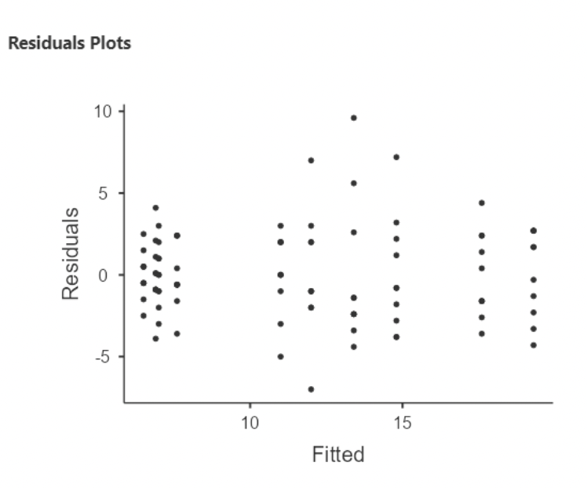

4 Chapter 4: ANOVA-based methods
Outline of notes
- What is ANOVA?
- One-way ANOVA
- Factorial ANOVA
- ANCOVA
4.1 What is ANOVA?
ANOVA stands for “analysis of variance”
ANOVA is regression with categorical predictors. That’s it.
4.1.1 ANOVA is regression presented differently
OK, there’s more to say about ANOVA than just “regression with categorical predictors.”
ANOVA is typically used to analyze data from experiments. In experiments, the categorical predictors are usually groups to which experimental units (aka subjects) are assigned. ANOVA tends to focus on comparing means of different groups to one another. Although ANOVA is “just” regression, there are conventions for reporting ANOVA results that are simpler and cleaner than what we’ve seen for regression.
4.1.2 Indicator variables
We’ve seen how to incorporate a categorical predictor into a regression model when the predictor takes on two values. We create an “indicator” (aka “dummy” aka “binary”) variable that takes on the values 0 or 1. For example:
\[ Y_i=\beta_0+\beta_1x_{1i} + \epsilon_i \]
\[ x_i = 1 \text{ if "treatment;"} x_i = 0 \text{ if "control"} \]
Here, \(\hat{y}_i = \hat{\beta}_0\) for control, and \(\hat{y}_i = \hat{\beta}_0 + \hat{\beta}_1\) for treatment.
What if our categorical predictor takes on more than two categories? Suppose we have three groups: treatment 1, treatment 2, and control. We can add another indicator:
\[ Y_i=\beta_0+\beta_1x_{1i} + \beta_2x_{2i} + \epsilon_i \]
\[ x_{1i} = 1 \text{ if treatment }1; x_{1i} = 0 \text{ otherwise} \\ x_{2i} = 1 \text{ if treatment }2; x_{1i} = 0 \text{ otherwise} \]
\(\hat{y}_i = \hat{\beta}_0\) for control, \(\hat{y}_i = \hat{\beta}_0 + \hat{\beta}_1\) for treatment 1, and \(\hat{y}_i = \hat{\beta}_0 + \hat{\beta}_1 + \hat{\beta}_2\) for treatment 2.
Control is serving as the “baseline” category, represented by the intercept.
4.2 One-Way ANOVA
One-way ANOVA models have a single categorical predictor variable. They can be written as:
\[ Y_i = \mu + \alpha_j + \epsilon_{ij}, \text{ where } \epsilon_{ij} \sim Normal(0,\sigma^2) \text{ and } i = 1, \dots ,n_j, j = 1, \dots, p \]
Where there are “\(p\)” groups (i.e. the categorical predictor takes on “\(p\)” values), “$n_j$” is the sample size of the \(j^{th}\) group, and \(y_{ij}\) is the \(i^{th}\) observation in the \(j^{th}\) group.
Here, \(\mu\) is the overall mean and \(\alpha_j\) is the deviation of the \(j^{th}\) group mean from the overall mean.
Suppose we have 4 groups. The ANOVA model is:
\[ Y_i = \mu + \alpha_j + \epsilon_{ij}, \text{ where } \epsilon_{ij} \sim Normal(0,\sigma^2) \text{ and } i = 1, \dots ,n_j, j = 1, \dots, 4 \]
Written as a regression model instead:
\[ Y_i = \beta_0 +\beta_1Group1 + \beta_2Group2 + \beta_3Group3 + \epsilon_{i}, \text{ where } \epsilon_{i} \sim Normal(0,\sigma^2) \text{ and } i = 1, \dots ,n \]
Here, the “Group” predictors are \(0\) / \(1\) indicator variables. For group \(4\), the mean of \(y\) is the intercept, \(\beta_0\).
4.3 Factorial ANOVA
If we have more than one categorical predictor variable, and interactions between the predictors, we have a factorial ANOVA model. Generically:
\[ Y_{ijk} = \mu + \alpha_j + \beta_k + (\alpha\beta)_{jk} + \epsilon_{ijk}, \text{ where } \epsilon_{ijk} \sim Normal(0,\sigma^2) \\ \text{ and } i = 1, \dots ,n_{jk}, j = 1, \dots, p, k = 1, \dots,q \]
Now predictor \(1\) is \(\alpha\) and predictor \(2\) is \(\beta\) and they interact. There are “$p$” groups for predictor \(1\) and “$q$” groups for predictor \(2\).
The subscripts start getting messy pretty fast.
4.3.1 Factorial ANOVA example
Here’s an example of a “5x2 factorial” ANOVA, meaning that one variable has 5 groups and the other has 2.
The study is on memory: how many words, on average, do people recall when given certain processing tasks?
This example is where the graph on our Canvas home page comes from. It uses data simulated to mimic data from a 1974 Hans Eysenck study.
100 subjects were split into 5 recall groups:
“Counting”: subjects counted how many letters were in each presented word
“Rhyming” subjects thought of words that rhymed with each presented word
“Adjective”: subjects thought of an adjective that could be used to modify each presented word
“Imagery”: subjects were told to form vivid images of each word
“Intentional”: subjects were told to memorize the word for later recall
Counting and rhyming are lower level processing tasks, so the hypothesis was that this group would recall fewer words than the others. Subjects were also classified as “young” or “old”.
Here’s the ANOVA model:
\[ Recall_{ijk} = \mu + Group_j + Age_k + (Group \cdot Age)_{jk} + \epsilon_{ijk}, \text{ where } \epsilon_{ijk} \sim Normal(0,\sigma^2) \\ \text{ and } j = 1, \dots ,5, k = 1, 2 \]
Jamovi has an “ANOVA” function and a “regression” function. We’ll use both the analyze these data.

First we’ll use ANOVA, using items recalled as the response (dependent) variable, and recall condition and age as factors. Note that jamovi automatically includes their interaction.
I am usually not interested in the sums of squares or mean squares in the ANOVA table, as these are not interpretable. We do have p-values for each “main effect” along with the interaction. More importantly, we have effect size statistics: eta-squared (\(\eta^2\)) and partial eta-squared (\(\eta^2p\))
4.3.2 ANOVA effect sizes: \(\eta^2\) and partial-\(\eta^2\)
\(\eta^2\) is akin to \(R^2\) for one factor (main effect or interaction). It gives the proportion of variance in the response attributable to the factor in question:
\[ \eta^2 = \frac{SS_{factor}}{SS_{total}} \]
Here, we see that recall condition explains the most variance by far, followed by age, followed by their interaction.
\(\eta^2p\) (partial eta-squared) is like \(\eta^2\), but with the variance accounted for by the other factors removed from the denominator:
\[ \eta^2p = \frac{SS_{factor}}{SS_{factor} + SS_{residuals}} \]
Example: for recall condition,
\[ \eta^2p = \frac{1515}{1515 + 722} = 0.677, \text{ and } \eta^2 = \frac{1515}{1515 + 240 + 190 + 722} = 0.568 \]
I personally prefer \(\eta^2\), as their sum cannot exceed \(1\). Some prefer \(\eta^2p\), because it quantifies the “effect” of a factor relative to remaining unexplained variance,
4.3.3 The means / interaction plot
We can make a nice plot under “estimated marginal means”:
This plot shows every combination of means across recall condition and age. It also has 95% CIs around each mean, and raw data displayed.
This is sometimes called a “means plot” or an “interaction plot”. The interaction is represented by non-parallel lines, e.g. a positive change going from “Imagery” to “Intention” for young people, but a negative change for old people.
The previous plot showed means for recall condition, with separate lines for age. If we flip the order of the variables, we get this:
Here we see that mean items recalled for young people is substantially higher than for old people in the last three conditions, but differs only slightly in the first two conditions.
4.3.4 ANOVA diagnostics
We can also run diagnostic tests, under “Assumption checks”:
The QQ plot looks pretty good.
I personally do not recommend paying attention to Levene’s “homogeneity of variances” test, nor to the Shapiro-Wilk normality tests
These tests use null hypotheses of “population variance is the same in all groups”, or “the residuals were drawn from a normal distribution”. As I don’t think these model assumptions could be literally true, I am not interested in whether they can be rejected by the data.
A “significant” violation of modeling assumptions does not imply a consequential violation. In particular, if sample size is large, trivial violations of assumption
4.3.5 Doing all of this as regression
The beginning of these slides claimed that ANOVA is just regression with categorical predictors. Let’s see what our results look like if we use jamovi’s “linear regression” function rather than “ANOVA”.
The predictor variables are entered as “factors” here, rather than as “covariates”, to ensure they are treated as categorical rather than as quantitative variables.
Finally, the interaction must be specified under “model builder”; jamovi does not create regression interactions by default.
There are five recall condition groups, giving four indicator variables, all compared against the baseline group “counting”, whose mean is represented by the intercept.
There are two “age” groups; “young” is the baseline group.
So the intercept of \(6.500\) is the mean words recalled for a young person in the “counting” condition.
The first indicator under RecallCondition is “Rhyming – Counting”. Its slope of \(1.1\) is the difference in mean recall for these two groups, when Age = Young
The interaction slope for “Rhyming – Counting” is \(-1.2\).
So, for Age = Old, the difference in mean recall is \(1.1 +(-1.2) = −0.1\)
The interaction terms are all indicators, that “turn on” when Age = Old, and “turn off” when Age = Young.
Notice that the slope for Age (“Old – Young”) is 0.5, suggesting greater recall for older participants.
However, the interaction slopes are all larger negative values.
So, when RecallCondition = Counting, the mean items recalled for Age = Old is larger than for Age = Young. But for all other recall conditions, the interaction slopes turn this negative, and mean items recalled is larger for younger participants.
4.3.5.1 Main regression results
“Estimated Marginal Means” under regression will produce a similar plot to the one made under ANOVA, just without the connecting lines and raw data:
If you look carefully, you should be able to see how the regression results correspond to this plot. For instance, we see that the only condition where Old > Young is Counting.
4.3.5.2 Residual plot
We can get a plot of residuals vs. fitted values.

Notice that the residuals are all vertically stacked? This is to be expected when predictor variables are categorical.
In this case, there are 5x2 = 10 possible combinations of groups that participants could be assigned to. And so there are only 10 possible “fitted” (i.e. predicted) values that the model can produce.
4.4 ANCOVA
ANCOVA (analysis of covariance) is ANOVA with an additional continuous predictor variable.
Typically, this additional continuous predictor is not of primary interest; the primary interest is still comparing group means.
The continuous predictor is often thought of as a “covariate” – a variable that should be accounted for when drawing inference on the other variables.
A common use of ANCOVA is for modeling an outcome when “baseline” or “pre-study” or “pre-test” scores are available.
For instance, consider testing different educational models on different sections of a class. Some get traditional lecture, some are completely “flipped”, and some are a combination of the two.
In this study, a preliminary quiz is given on the first day of class. Score on the preliminary quiz will be the covariate. Score on an end of semester quiz (“post”) will be the response variable.
\[ Post_{ij} = \mu + type_j + \beta(pre_{ij} - \overline{pre}) + \epsilon_{ij} \]
Here, \(j\) goes from \(1\) to \(3\), for the three teaching types being compared.
The pre-test predictor is centered (note that \(\overline{pre}\) is mean for pretests).
Imagine we believe that the mean differences between teaching types will be larger for students with lower pretest scores. To account for this possibility, let type and (centered) pretest interact:
\[ Course\_avg_{ij} = \mu + type_j + \beta(pre_{ij} - \bar{pre}) + \gamma_j(type_j)(pre_j - \overline{pre}) + \epsilon_{ij} \]
4.4.0.1 Looking at the data
The data file is called “test_pretest”. Here is the formatting:
This plot was made using Analyses / Exploration / Scatterplot. Density curves are there, just for fun:
The three lines look pretty close to parallel, so there either isn’t an obvious interaction here, or it’s small.
4.4.0.2 Analysis using ANCOVA
Notice that the effect size for pre- score is far greater than the effect size for type, or for the interaction. This is not surprising.
Type is still significant; it’s \(\eta^2p\) value is much larger than its \(\eta^2\) value.
Careful interpreting the “Estimated marginal means” plot – it takes into account only “post” scores!
4.4.0.3 Analysis using regression w/ indicators
For the regression analysis, we’ll use two indicator variables. We don’t have to do it this way; if we just include “type”, jamovi will create the indicators for us, using the first class type listed in the data.
Notice that the interaction estimates are small relative to their standard errors (thus producing large p- values).
According to this regression model, there is not a “significant” interaction.
4.4.0.4 Analysis using regression w/factor
Here’s what happens if we put in “type” as a factor variable rather than making our own indicators. The results are the same.
The QQ plot and residual plot both look great
4.4.1 Analyzing paired data: ANCOVA vs ANOVA
Another approach we could take would be to compute the differences in the two scores for each person, then do a regular ANOVA or regression analysis on those.
We see that there are significant differences in mean test score change between teaching types ($F=8.94, p<0.001$)
4.4.1.1 Analyze differences, regression approach
This agrees with the ANOVA results from the previous slide: we have a statistically significant difference in mean test score differences (post – pre) when comparing “combo” to “flipped” or “traditional”. And \(R^2 = \eta^2\)!
It turns out here that taking the post – pre differences first and then comparing mean differences across teaching types produces similar results to predicting post-test scores using pre-test and teaching type as predictors.
But, these methods are not answering the exact same question. Using pre-test as a covariate, we answer the question “what difference do I expect in post-test scores when comparing two students with the same pre- test score but different teaching types”?
When differencing first and then doing the analysis, we answer the question “what differences in the mean post-pre score change do I expect when comparing class types”?
These question sound similar, but they aren’t the same! Whether to use ANCOVA or do the differencing first is a matter of subjective judgement, and the experts don’t all agree (see “Lord’s Paradox” for more fun on this).